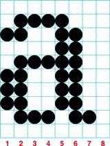
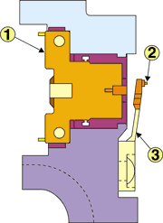
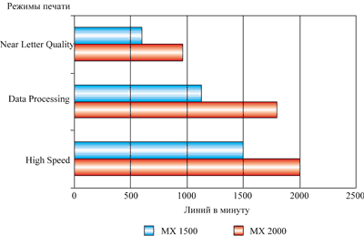
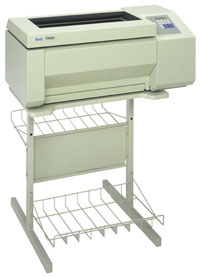
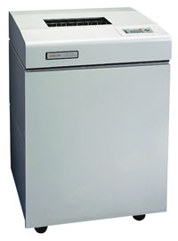

Андрей Борзенко
Несмотря на внедрение новейших систем электронного документооборота и архивного хранения, бумажный поток в организациях нарастает как снежный ком. Неудивительно поэтому, что самыми распространенными устройствами вывода информации для компьютеров остаются печатающие устройства, или принтеры. Все такие устройства можно подразделить на последовательные, строчные и страничные. Принадлежность принтера к той или иной из перечисленных групп зависит от того, формирует он на бумаге символ за символом или сразу всю строку, а то и целую страницу. В свою очередь, в каждой группе можно выделить устройства ударного (impact) и безударного (non-impact) действия. Далее принтеры можно подразделить на матричные и символьные (сейчас, кстати, крайне редко встречающиеся), и только после этого речь может идти об используемой технологии печати: струйные, лазерные и т. д.
Как известно, идея матричной печати заключается в том, что все знаки воспроизводятся ими из набора отдельных точек, наносимых на бумагу тем или иным способом. Чаще всего матричными принтерами называют устройства ударного действия. Говорят, что эра массового применения подобных принтеров давно миновала. Технологии быстрой печати, такие, как лазерная, светодиодная, струйная. изрядно подешевели и используются сегодня практически повсеместно. Однако, несмотря на то, что в качестве устройств печати в сфере бизнеса чаще всего используются принтеры безударного действия, говорить о кончине матричной ударной технологии печати еще рано: существуют области бизнеса, где самые современные принципы печати оказываются значительно менее эффективными. А в некоторых случаях альтернативы матричным устройствам ударного действия просто нет.
Например, существует задача ежедневного вывода нескольких тысяч листов в банках или других финансовых организациях, бухгалтериях крупных предприятий, т. е. там, где основное требование к устройствам печати - производительность. Использование быстрых неконтактных методов печати в подобных случаях связано с большими затратами.
Существенно снизить финансовые издержки при больших объемах печати позволяют только ударные матричные принтеры параллельной печати. Неизменным успехом такие устройства пользуются в банках, налоговых инспекциях, таможенных и других подобных организациях. Причин тому несколько. Как уже отмечалось, одно из самых важных преимуществ этих устройств - низкая стоимость отпечатка, в несколько раз меньше, чем при других способах печати. Кроме того, матричные принтеры очень неприхотливы, надежны, просты в эксплуатации и обладают большим ресурсом. Заменить картридж с красящей лентой можно почти на ходу. Немаловажным преимуществом оказывается и то, что в ряде случаев подтверждение подлинности документа требует наличия оттиска на бумаге, практически исключающего возможность фальсификации. Здесь ударно-матричные принтеры оказываются просто вне конкуренции.
Вообще говоря, устройства, приспособленные для распечатки больших объемов текста, существуют уже давно. Когда компьютеры в нашей стране еще назывались ЭВМ, для этой цели широко использовались АЦПУ (алфавитно-цифровые печатающие устройства) - аппараты громоздкие, шумные, но довольно быстрые. В настоящее время они практически не используются, по причинам высокого уровня шума, недостаточной скорости печати и проблем с техническим обслуживанием. Например, по оценкам специалистов компании OKI, обслуживание АЦПУ в месяц обходится примерно в 1000 долл., в то время как аналогичные расходы для современного ударно-матричного принтера параллельной печати составляют 2 тыс. долл. - но за целый год.
Эксплуатация в жестких условиях предъявляет к рабочим характеристикам принтеров довольно специфические требования. Как правило, недорогие принтеры, рассчитанные на использование дома и в офисах, этим требованиям не удовлетворяют. Дело в том, что введение электронного документооборота, безусловно, ускорило расчеты, но поставило финансовые организации и их отделения перед необходимостью самостоятельно распечатывать значительно большее количество документов, чем раньше. Обычные офисные лазерные и матричные принтеры низкой производительности просто перестают справляться с возросшим объемом работ. В некоторых случаях, например, при распечатке выписок по счетам, приходится выводить на печать очень большие массивы информации (например, в крупных банках это сотни, а то и тысячи страниц), что совершенно не под силу стандартному офисному принтеру.
Среди свойств, которыми должны обладать подобные принтеры, на первом месте стоит, пожалуй, повышенная надежность и износостойкость. Очень часто требуется, чтобы принтер работал круглосуточно. Важна также оперативность замены расходных материалов - картриджей, а в некоторых случаях и печатающих головок (у ряда моделей скоростных матричных принтеров печатающие головки относятся к категории расходных материалов). Не менее существенна и скорость работы. Самые недорогие принтеры для финансовых организаций должны обеспечивать производительность как минимум на уровне хороших офисных лазерных и струйных моделей. Зачастую, однако, требуется и заметно большее быстродействие.
Наконец, третье условие - малая стоимость расходных материалов в пересчете на количество напечатанных знаков. Картриджи для подобных устройств почти всегда (и независимо от принципа печати) имеют значительно больший по сравнению с офисными моделями ресурс при немного более высокой цене. Качество печати для данных принтеров стоит не на первом месте, его обычно принимают во внимание, когда все прочие характеристики разных устройств примерно одинаковы.
Наибольшую производительность среди печатающих устройств ударного типа обеспечивают принтеры построчной печати, или линейно-матричные принтеры. Как уже отмечалось, основные области применения этих принтеров - финансовая сфера и вычислительные центры, где они постепенно вытесняют АЦПУ в качестве устройств вывода для мэйнфреймов. В последнем случае главное отличие и преимущество линейно-матричных принтеров заключается в том, что можно использовать несколько типов и размеров шрифтов, печатать графику и штрих-коды. Дело в том, что в отличие от старых АЦПУ подобные принтеры печатают всю линейку за один раз, но не символами, а точками, расположенными по всей ширине "шаттл"-механизма. Наличие быстро перепрограммируемой флэш-памяти допускает загрузку любых пользовательских шрифтов.
Технологии матричной печати
Ударные принтеры
Для формирования изображения матричные ударные принтеры используют печатающую головку, содержащую массив иголок. Символы формируются по столбцам до тех пор, пока полностью не сформируется вся "матрица". Изображение формируется путем "выстреливания" иголочек, содержащихся в печатающей головке, на прокрашенную ленту, в результате чего на бумаге образуется точка. Например, строчная буква "а" сверху формируется печатающей головкой при помощи иголок 3, 6-8 в первой колонке, 2, 3, 5-9 во второй и так далее до заполнения матрицы (рис. 1). Качество изображения может быть улучшено за счет более близкого расположения точек или за счет перекрытия. Чем меньше расстояния между точками, тем более четкими и гладкими получаются символы. Качество изображения символов также улучшается при использовании головок, содержащих большее количество иголок. В матричных принтерах используют головки с 9, 18 и 24 иголками. Однако большинство 18-игольчатых головок содержат два ряда по 9 иголок в каждом, поэтому результат их печати не отличается от обычного 9-игольчатого принтера (зато два ряда по 9 иголок обычно дают увеличение срока службы и/или более высокую скорость печати). Высокое качество печати достигается в режимах NLQ (Near Letter Quality) для 9-игольчатых и LQ (Letter Quality) - для 24-игольчатых принтеров.
|  | Рис. 1. Формирование символа матрицей точек.
|
Матричные принтеры обычно могут печатать как на форматной, так и на рулонной бумаге. Существуют модели принтеров с широкой (формат А3) и узкой (формат А4) кареткой. Как правило, современные принтеры оснащены резидентными или загружаемыми масштабируемыми шрифтами. Скорость печати для высокопроизводительных моделей может составлять несколько сотен знаков в секунду.
К недостаткам ударных принтеров прежде всего относится высокий уровень шума. Фирмы-производители таких устройств применяют различные технические решения, чтобы по возможности уменьшить шум. Так, например, некоторые малошумящие принтеры используют печатающие головки со специальным расположением иголок.
Принтеры ударного действия обладают наилучшим соотношением цена/производительность, постраничные операционные расходы при эксплуатации у них в несколько раз ниже, чем у лазерных принтеров. Еще раз отметим, что они обеспечивают печать на многослойных бланках или на носителе большой толщины. Матричные принтеры крайне неприхотливы, а лучшие модели могут работать круглосуточно.
Принтеры параллельной печати
Вообще говоря, скорость работы обычного матричного ударного принтера последовательного действия, в котором используется печатающая головка с управляемыми иголками, движущаяся вдоль всей строки, невелика. Увеличить ее не представляется возможным из-за перегрева иголок, большого шума и значительной вибрации аппарата, а также вследствие ограниченной скорости движения каретки. Задача скоростной печати решается иным образом - обрабатывается вся строка сразу. Развернув плоскость печатающих элементов на 90° и расположив печатающие элементы пропорционально по всей ширине формата, можно печатать сразу всю строку символов. Устройства, основанные на принципе построчной печати, составляют класс принтеров параллельной (линейной, строчной) печати. Именно они наилучшим образом подходят для постоянной печати больших объемов с точки зрения надежности, производительности и стоимости. В настоящее время из всего многообразия методов параллельной печати продолжает совершенствоваться только один - печать строки символов с помощью расположенных вдоль строки микроэлементов, установленных в одном узле - челночном механизме, так называемом шаттл-модуле. Высокая производительность здесь обеспечивается за счет применения архитектуры страничной сегментации, позволяющей еще до начала печати организовать поток данных в страничный формат и печатать весь текст и графику за один проход.
Такая конструкция обеспечивает значительно более высокую по сравнению с обычными матричными принтерами производительность при том же качестве печати. Возвратно-поступательное движение головки заменяется на колебательное. При этом механизм привода головки кардинально меняется и исключаются такие весьма неприятные и расходующие массу времени процедуры, как разгон и торможение головки в начале и конце строки.
Как правило, подобный принтер состоит из четырех основных узлов: блока печатающих модулей, привода печатающих модулей (шаттл-механизма), вентиляторов для удаления бумажной пыли и управляющей электроники. Вообще говоря, существует несколько способов заставить колебаться печатающую головку линейно-матричного принтера. Наиболее простой и очевидный применяют компании Tally и Printronix. Это обычный электродвигатель с эксцентриком - примерно такая же конструкция, что и в ножной швейной машинке. Принципиально иначе решила эту проблему компания Genicom: она начала использовать резонансный привод с электронной следящей системой.
По-разному выполнены и печатающие головки линейно-матричных принтеров у различных фирм-производителей. Так, в принтерах OKI Microline MX используется технология Dual Hammerbank, основная идея которой довольно проста. Большее количество печатающих элементов ("молоточков") означает большую скорость печати. Всего их 156 - этого более чем достаточно. Чтобы такое количество "молоточков" поместилось на ограниченном пространстве, они размещены в два ряда, по 78 в каждом, и соединены друг с другом. Следовательно, при каждом ударе пропечатываются две линии вместо одной - за счет чего и увеличивается скорость. В принтерах OKI изготовленные по лазерной технологии объемной резки печатающие иголки объединены в специальные модули (фраты) для простоты их замены. Упрощенная схема печатающей головки линейно-матричного принтера приведена на рис. 2. Импульс тока, проходящий через катушку (1) электромагнита, заставляет молоточек (2) ударять по красящей ленте, а пружина (3) возвращает его на место.
|  | Рис. 2. Блок-схема печатающей головки (1 - катушка электромагнита, 2-печатающий элемент, 3 - пружина). |
Что касается системы внутреннего тепло- и массообмена подобных устройств, следует отметить, что наличие мощных вентиляторов позволяет эффективно удалять бумажную пыль, обильно образующуюся при протяжке бумаги. Чем эффективнее продуман отвод воздуха и удачнее расположены воздуховоды, тем больше времени принтер способен работать без сервисного обслуживания, что экономит немалые деньги.
Для печати используется перфорированная (фальцованная) бумага непрерывной формы формата А4 или А3. Перемещается бумага при помощи проталкивающих тракторов. Современные устройства позволяют получать до шести копий документа за один цикл печати.
Существует возможность ручного варьирования режимов и качества печати. Однако несомненное преимущество линейно-матричных принтеров заключается в том, что ими можно управлять через сеть или Web-браузер. Причем можно не только дистанционно менять внутреннюю конфигурацию принтера (шрифты, эмуляцию, режим on/off и т. д.), но и выполнять простейшую диагностику (например, принтер сам напомнит о своевременной замене картриджа или сообщит об остановке печати в связи с перекосом бумаги). Администратор, который отвечает за работу принтера, будет сразу же оповещен о проблеме, что уменьшит время простоя, увеличит производительность и снизит издержки. Например, нередка такая ситуация, когда все уверены, что принтер печатает, а на самом деле в нем кончилась бумага.
Обычно линейно-матричные принтеры работают в большинстве известных ОС и сетевых сред. Отдельно следует отметить большой набор опциональных интерфейсов для подключения к различным системам.
Линейно-матричные принтеры обеспечивают наибольшую на сегодняшний день скорость печати при минимальной стоимости страницы (рис. 3). Сравнительно высокая стоимость самих принтеров достаточно быстро окупается за счет их экономичности, надежности и удобства. Шумят они не громче, чем традиционные матричные аппараты. Следует обратить внимание на то, что подобные принтеры незаменимы не только при постоянных нагрузках, но и в тех случаях, где необходимо вывести много информации за короткий промежуток времени, т. е. нагрузка печати распределена неравномерно.
|  | Рис. 3. Скорость работы принтеров OKI Microline MX в различных режимах.
|
По производительности самые быстрые современные линейно-матричные принтеры в разы превосходят, например, хорошо известное АЦПУ СМ 6315. Как и обычный матричный, строчной принтер позволяет менять шрифты, выводить промышленную графику и штрих-коды.
Способ размещения красящей ленты в принтерах разных фирм-производителей несколько отличается. Предлагаются как картриджи без возможности перезарядки ленты, так и ленты на открытых бобинах, что, естественно, дешевле. Ресурс ленты составляет обычно 30, 45 и даже 60 млн символов.
Как правило, линейно-матричные принтеры выполнены либо в компактных корпусах типа "пьедестал" (рис. 4), либо в корпусах типа "кабинет" (рис. 5), которые отличаются низким уровнем акустических шумов. Благодаря малому уровню шума при печати такие принтеры можно устанавливать непосредственно в офисе, что экономит дефицитное рабочее пространство.
|  |  |
| Рис. 4. Линейно-матричный принтер в корпусе "пьедестал".
|
Рис. 5. Линейно-матричный принтер в корпусе "кабинет".
|
Выбор линейно-матричного принтера
Существуют различные мнения о том, что лучше - один высокопроизводительный аппарат или несколько менее производительных, но более дешевых (например, один линейно-матричный принтер вместо десяти недорогих матричных печатающих устройств). Действительно, производительность в сумме примерно та же, стоимость копии - тоже, а цена самих аппаратов раза в полтора меньше. Преимущество второго варианта - подстраховка на случай поломки: выход из строя одного-двух печатающих устройств не может существенно отразиться на всей работе в целом. Стоит, однако, отметить, что линейно-матричные принтеры отличаются повышенной надежностью. К тому же основные преимущества второго варианта на этом и заканчиваются. Недостатков у него гораздо больше. Во-первых, на офисном принтере хорошо распечатывать большое число коротких документов, а с длинными часто возникают проблемы. Другой существенный недостаток - шум, возникающий в процессе работы устройств. Десять матричных принтеров шумят как минимум в десять раз громче, чем один линейно-матричный. Работать рядом с ними совершенно невозможно. Да и места они занимают в несколько раз больше. Кроме того, каждый требует индивидуального обслуживания (заправки бумаги, замены ленты и т. п.). Сравнение показателей работы двух типов матричных принтеров проводится в таблице.
Характеристики двух типов матричных принтеров
| Характеристика | Матричные принтеры | Линейно-матричные принтеры |
| Производительность | Средняя | Очень высокая |
| Цена устройства | Низкая или средняя | Высокая |
| Стоимость копии | Низкая | Низкая |
| Уровень шума | Средний | Низкий или средний |
| Качество печати | Среднее | Среднее |
Какой тип принтера предпочесть? Все зависит от объема работ. Если он составляет порядка нескольких сотен страниц в день, то вполне можно обойтись матричным принтером средней либо высокой производительности, а если больше - весьма желателен линейно-матричный аппарат. Следует помнить о том, что при очень интенсивной работе цена самого принтера не столь существенна по сравнению с расходами на бумагу и картриджи. Хотя сами по себе эти принтеры заметно дороже традиционных матричных, при интенсивной работе они в итоге могут обойтись дешевле. Если же объем распечатываемой документации велик, то низкая стоимость отпечатка, характерная для подобного рода устройств, многократно оправдает первоначальные затраты на их приобретение, равно как и издержки на эксплуатацию более разнообразного парка техники.
Выбирая высокоскоростной принтер, необходимо обратить внимание на несколько важных технических характеристик, значение которых должно соответствовать потребностям бизнеса. Один из основных параметров - это, конечно, скорость печати. На сегодняшний день этот параметр для отдельных моделей может достигать 2 тыс. строк в минуту. Но часто такая производительность и не нужна. Если подобная скорость оказывается избыточной для текущих объемов печати, то в ассортименте фирм-поставщиков есть менее производительные модели, например, со скоростью 500 или 1000 строк/мин (речь идет о "черновых" режимах работы, качественная печать выполняется примерно раза в два медленнее).
Другая важнейшая характеристика - рекомендуемый месячный объем печати. Именно она фактически определяет мощность принтера. Как правило, печатающее устройство данного класса должно быть рассчитано на высокую нагрузку, например, до 300 тыс. печатных страниц в месяц. Для современных моделей принтеров производители часто не указывают данный параметр, ссылаясь на то, что ограничений по объему печати практически нет.
Среднее время наработки на отказ MTBF (Mean Time Between Failures) - следующий важный параметр, значение которого соответствует среднему времени безотказной работы устройства при рабочей нагрузке, не превышающей рекомендуемого объема печати, и при соблюдении правил эксплуатации.
Небезынтересен и такой параметр, как уровень шума работающего принтера, измеряемый в децибелах (дБ). Чем ниже данная величина, тем комфортнее будут условия работы для пользователей и обслуживающего персонала, находящегося в комнате, где идет печать. Малошумящие модели гарантируют уровень шума на уровне 50-52 дБ.
Разумеется, особо пристальное внимание при покупке принтера следует обратить внимание на способность фирмы-продавца обеспечить необходимый уровень как гарантийного, так и послегарантийного обслуживания.
В настоящее время линейно-матричные принтеры эффективно используются в банковских структурах, телекоммуникационных компаниях, транспортных и торговых корпорациях, крупных промышленных предприятиях, министерствах, административных учреждениях.
Фирмы-производителиВыпуском линейно-матричных принтеров занимается сравнительно небольшой круг фирм. На российском рынке особой популярностью пользуются модели печатающих устройств с логотипами Genicom, OKI, Printronix, Tally. Genicomhttp://www.genicom-international.com/ru История Genicom начинается с 1969 г. Тогда подразделение General Electric (впоследствии самостоятельная корпорация Genicom) выпустило первый в мире электромеханический принтер. Поглотив в процессе развития фирму Centronics, принтерные отделения Texas Instruments и Digital Equipment, Genicom уже более трех десятков лет остается одним из ведущих производителей сетевых принтеров и устройств печати для корпоративного рынка. OKIКорпорация OKI (Япония) была образована еще в 1881 г. На сегодняшний день это одна из крупнейших фирм-изготовителей телекоммуникационного оборудования и компьютерной периферии. OKI Europe, с головным офисом в Великобритании, составляет часть OKI Data Corporation, дочерней компании OKI Electric Industry. На европейском рынке OKI предлагает страничные светодиодные и профессиональные матричные принтеры, а также принтеры для обслуживания торговых розничных точек. Значительную часть бизнеса OKI составляет производство профессиональных матричных принтеров. Все модели подобных устройств содержат множество собственных разработок корпорации. PrintronixКомпания Printronix, выпустившая свое первое линейно-матричное печатающее устройство в 1974 г., по праву считается разработчиком шаттл-печати. В отличие от других принтеров того времени в новом устройстве были реализованы гибкие встроенные шрифты, графические возможности. Необычно большой была и долговечность конструкции. Спустя четверть века торговая марка Printronix стала синонимом сверхпроизводительной технологии линейной матричной печати. В 1998 г. на рынке появилось новое семейство принтеров Printronix пятого поколения, среди особенностей которых - новая печатающая головка с повышенной точностью, трехмерные иглы и последнее воплощение системной архитектуры PSA (Printronix System Architecture). Продукция Printronix пользуется огромной популярностью во всем мире и занимает около 50% рынка линейно-матричных принтеров. TallyИстория компании насчитывает почти четверть века. В 1973 г. в г. Ульм (Германия) концерны Mannesmann и Siemens для производства матричных принтеров создали фирму Mannesmann Prazisionstechnik ("Точная механика"). После объединения в 1979 г. с корпорацией Tally (Кентукки, США) была зарегистрирована торговая марка Mannesmann Tally. В 1986 г. Mannesmann Tally становится самостоятельной компанией и покупает фабрику по производству цветных принтеров фирмы Spectrastar в Беркли (США). В 1996 г. Legal & General Ventures, третья по величине страховая компания в Англии, выкупила Mannesmann Tally (новое название - Tally) и предоставила компании самостоятельность в определении направлений дальнейшего развития. Tally занимается разработкой только профессиональных принтеров. На сегодняшний день компания выпускает полный спектр принтеров: матричные, лазерные, линейно-матричные, струйные, специализированные. Те же принтеры по OEM-соглашениям выпускают под своей торговой маркой известные фирмы-производители. |